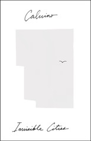

Invisible Cities
Le città invisibili
Invisible Cities is one of Calvino's best works; it's also the least narrative of his work I've encountered so far. It's as if he took the more realistic character or setting sketch short stories he's played with and distilled them even further, mixed them with the singular high concept exploration from his cosmic stories, and decided to see how far he could take it. It reminds me in a way of Italian Folktales, surprisingly, both in its sheer variety and in its willingness to explore variations on a few distinct themes.
So many of the cities depicted here are paired, really or illusorily, to draw attention to one or another aspect of life or existence there. So many of the cities have unusual relationships to names and signs, often becoming unmoored from the things they represent; even Armilla, the city made of the movement of water (and without walls, floors, or ceilings) could be considered a version of this.
But maybe more importantly, and the only theme that I think was explicitly referred to in the Kublai Khan framing story, is the origin of all these wondrously-imagined cities. Whether they're derived from a set of rules (like the set of all possible chess games), or are considered deviations from an ideal city (or Venice), or they're represented or not in one of the Khan's collection of atlases -- the cities Marco Polo describes here are all reflections, explorations, fantasies. Every one bears thought and is worth elaboration.
Phyllis -- the city that astounds when you first behold it, but eventually becomes commonplace and ignored -- is the one that stands out to me most on this reading. It's almost a stand-in for Invisible Cities itself, and a reminder not to habituate to or take for granted the wondrous we encounter every day.
Maybe unsurprisingly, I thought about architecture a good bit while reading this. I'm still thinking through a couple of parallels. Phyllis reminded me strongly of Christopher Alexander's zen view pattern, for one. For the other, and maybe less obviously, Leandra's gods who move and gods who stay reminded me of Stewart Brand's pace layers.